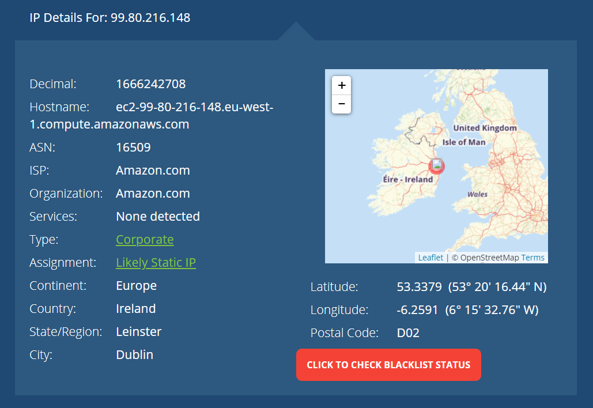
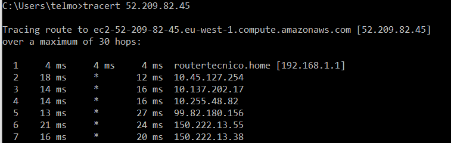
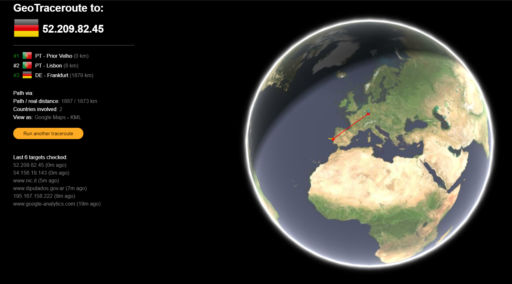
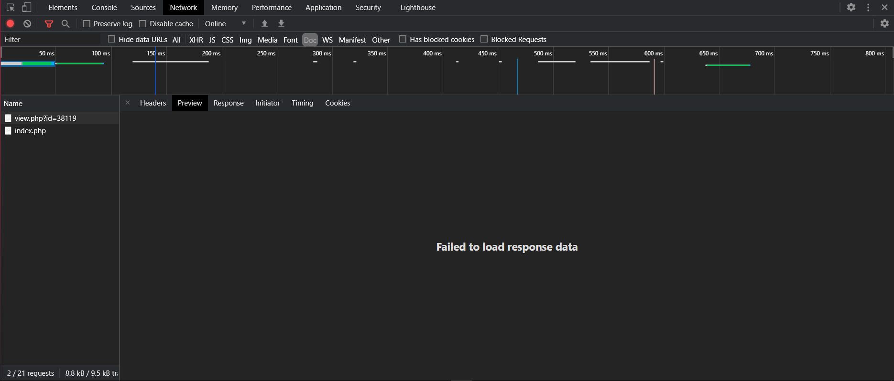
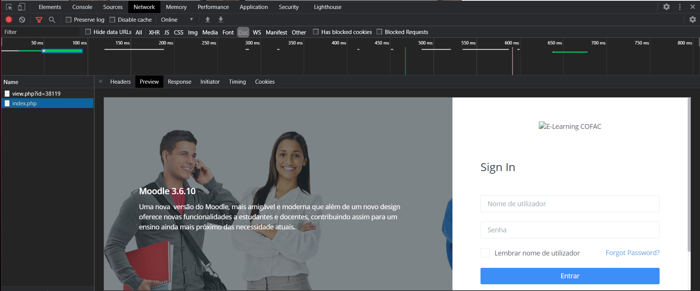

Figura 2.1 -
Nesta imagem conseguimos observar que:
- O request demorou 0.57ms
- Esteve á espera para receber uma resposta durante 72.11ms

Figura 2.2 -

Figura 1.1 - Endereço IP computador
Infelizmente já não tenho dados móveis, então o IP com o Wi-Fi é exatamente o mesmo que o do PC
Figura 1.2 - IP do site hospedado no Heroku
Figura 1.3 - Percurso
Figura 1.4 - Percurso
Figura 2.1 -
Nesta imagem conseguimos observar que:
Figura 2.2 -
Depois de o click no hyperlink, fomos redirecionados para o moodle da Universidade

Figura 2.3 -
E foram descarregados 2 ficheiros do tipo php

Figura 2.4 -
Em que obtivemos 63 microsegundos de request e 149.72 ms de espera
Já os tempos de descarga foram no total 298 ms.
Na preview consegui observar que um dos ficheiros falhou a carregar e o outro ficheiro foi carregado com sucesso, neste caso o login do moodle da Universidade
Figura 2.5 -
Figura 2.6 -
Nos headers consegui observar que o ficheiro que falhou a carregar tem 4 abas que podemos expandir sendo elas:

Figura 2.7.1 -

Figura 2.7.2 -

Figura 2.7.3 -

Figura 2.7.4 -
Já o ficheiro que foi carregado com sucesso consegui observar apenas as 3 primeiras abas da lista anterior

Figura 2.8.1 -

Figura 2.8.2 -

Figura 2.8.3 -
Já no Timing consegui observar as seguintes informações para o ficheiro que foi carregado com sucesso:
Figura 2.9 -
Já no ficheiro que não foi carregado consegui observar tudo o que mencionei anteriormente (com tempos diferentes) mas com a excessão que o "Connection Start" tinha mais subcomponentes
Connection Start
Figura 2.9.1 -